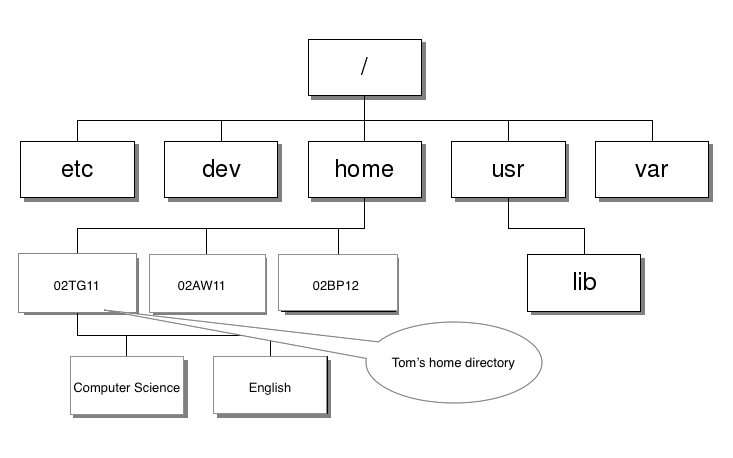

Intro to Linux Homework
Homework
Homework 1
- Write a short report/presentation about another Linux distro. Include screenshots and all its useful features.
Homework 2
- Research the following and answer each question with a paragraph using complete sentences (not copy and paste from the Internet) and no spelling mistakes.
- Linux is a free and open source OS. What does it mean by open source?
- What is a kernel?
- What is Lunix? What does it do?
- If Linux is free and open source software, how do programmers working on such software make money?
Homework 3
The following file system is commonly seen in a Linux environment. When you log on, normally your home directory will be /home/yourLoginID. Tom Green logged on using his login ID 02TG11.

Answer the following questions:
- What is the full path to the English directory?
- What command does Tom need to find out where the current directory is in the file system?
- Tom wants to create another directory for his subject Maths under his own home directory. What command does he need?
- Tom has a file named “MathsExecise.txt” under his home directory. What command allows him to move this file into the new Maths directory he just created?
- Under his home directory, Tom used “cd Maths” to navigate to the Maths directory. After he has done some work, he needs to move back to his home directory. What is the shortest command Tom can use?
- Once Tom moved to his home directory, he used the command “touch myCSHomeWork.txt” to create a new file. He then used “emacs myCSHomeWork.txt” to edit the file. After he has done editing, he needs to save and close emacs. What emacs key combinations (in order) should he use?
- Tom later wants to find out if his myCSHomeWork.txt contains the word “algebra”. Without opening this file, how does Tom find it out?